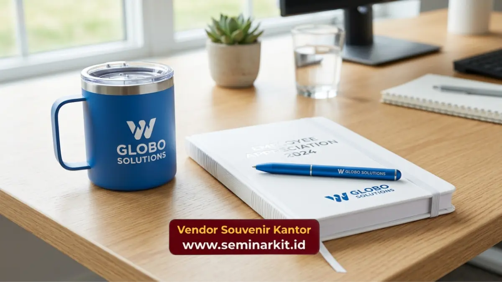

Souvenir untuk karyawan adalah barang penghargaan atau merchandise korporat yang diberikan perusahaan kepada karyawan sebagai bentuk apresiasi, motivasi, dan penguatan budaya kerja. Barang ini umumnya berupa alat tulis premium, tumbler, tas kerja, hingga paket hampers custom logo. Perusahaan yang ingin memesan souvenir karyawan berkualitas dapat langsung menghubungi vendorsouvenirkantor.web.id untuk konsultasi dan penawaran terbaik.
- Souvenir untuk karyawan berfungsi sebagai alat apresiasi sekaligus media branding internal perusahaan.
- Jenis souvenir paling diminati meliputi tumbler, tas, alat tulis, dan hampers custom logo.
- Pemilihan souvenir sebaiknya mempertimbangkan kualitas, relevansi kebutuhan karyawan, dan konsistensi identitas brand.
- Vendorsouvenirkantor.web.id menyediakan layanan custom logo dengan proses pemesanan yang praktis untuk kebutuhan korporat skala kecil maupun besar.
Apa Itu Souvenir untuk Karyawan?
Souvenir untuk karyawan adalah bentuk penghargaan fisik yang diberikan perusahaan sebagai simbol terima kasih atas kontribusi, loyalitas, atau pencapaian kerja seorang karyawan. Berbeda dengan gaji atau bonus, souvenir memiliki nilai emosional karena sifatnya personal dan biasanya dirancang khusus dengan identitas perusahaan.
Dalam praktiknya, souvenir karyawan sering diberikan pada momen tertentu seperti ulang tahun perusahaan, hari raya keagamaan, pencapaian target tahunan, atau sebagai bagian dari program onboarding karyawan baru. Fungsi utamanya bukan hanya sebagai hadiah, tetapi juga sebagai media yang memperkuat rasa memiliki karyawan terhadap perusahaan.
Secara umum, perusahaan yang konsisten memberikan souvenir berkualitas kepada karyawannya cenderung memiliki tingkat retensi dan engagement kerja yang lebih baik. Hal ini karena souvenir menjadi pengingat nyata bahwa kontribusi karyawan diperhatikan oleh manajemen.
Mengapa Souvenir Karyawan Penting bagi Perusahaan?
Pemberian souvenir kepada karyawan bukan sekadar formalitas, melainkan investasi jangka panjang dalam membangun budaya kerja yang positif. Berikut beberapa alasan mengapa souvenir karyawan penting untuk diperhatikan oleh manajemen dan tim HR.
Apakah Souvenir Karyawan Meningkatkan Motivasi Kerja?
Ya, souvenir karyawan yang diberikan secara tepat waktu dan bermakna dapat meningkatkan motivasi kerja secara signifikan. Ketika karyawan merasa usahanya diakui melalui bentuk nyata seperti merchandise berkualitas, mereka cenderung lebih termotivasi untuk mempertahankan performa kerja yang baik.
Motivasi ini juga berdampak pada suasana kerja tim secara keseluruhan. Karyawan yang merasa dihargai umumnya lebih kooperatif, lebih terbuka terhadap kolaborasi, dan lebih loyal terhadap perusahaan dalam jangka panjang.
Bagaimana Souvenir Karyawan Memperkuat Branding Internal?
Souvenir karyawan yang dicetak dengan logo dan identitas visual perusahaan berfungsi sebagai media branding internal yang efektif. Setiap kali karyawan menggunakan tumbler, tas, atau alat tulis berlogo perusahaan, secara tidak langsung mereka turut memperkenalkan identitas brand tersebut, baik di lingkungan kerja maupun di luar kantor.
Konsistensi visual pada souvenir juga membantu membangun citra profesional perusahaan di mata klien, mitra bisnis, dan calon karyawan yang melihat merchandise tersebut digunakan sehari-hari.
Jenis Souvenir untuk Karyawan yang Populer
Terdapat beragam jenis souvenir karyawan yang dapat disesuaikan dengan kebutuhan, anggaran, dan momen pemberian. Pemilihan jenis yang tepat akan menentukan seberapa besar dampak apresiasi yang dirasakan oleh karyawan.
Souvenir Fungsional untuk Kebutuhan Kerja Sehari-hari
Kategori ini mencakup barang yang langsung dapat digunakan karyawan dalam aktivitas kerja, seperti tumbler, notebook, pulpen premium, power bank, hingga tas laptop. Souvenir fungsional cenderung lebih disukai karena nilai gunanya yang tinggi dan tidak mudah terbuang begitu saja.
Souvenir Apresiasi untuk Momen Khusus
Untuk momen seperti hari raya, ulang tahun perusahaan, atau penghargaan tahunan, perusahaan biasanya memilih souvenir yang lebih personal, seperti hampers custom, plakat penghargaan, atau paket gift set premium. Jenis ini memberikan kesan lebih istimewa dibandingkan souvenir fungsional biasa.
Souvenir Custom Logo sebagai Identitas Brand
Hampir semua jenis souvenir di atas dapat dikustomisasi dengan logo dan warna identitas perusahaan. Pendekatan ini menjadikan souvenir tidak hanya berfungsi sebagai hadiah, tetapi juga sebagai bagian dari strategi branding jangka panjang perusahaan.

Faktor Penting dalam Memilih Souvenir Karyawan
Sebelum memutuskan jenis souvenir yang akan diberikan, ada beberapa faktor yang perlu dipertimbangkan agar hasilnya benar-benar berdampak positif bagi karyawan dan perusahaan.
Apa Saja Kriteria Souvenir Karyawan yang Berkualitas?
Souvenir karyawan yang berkualitas umumnya memenuhi tiga kriteria utama: bahan yang tahan lama, desain yang relevan dengan kebutuhan karyawan, dan proses produksi yang rapi termasuk hasil cetak logo yang presisi. Souvenir dengan kualitas rendah justru dapat menimbulkan kesan sebaliknya, yaitu bahwa perusahaan kurang serious dalam mengapresiasi karyawannya.
Anggaran juga menjadi pertimbangan penting, namun kualitas tetap harus diutamakan agar souvenir dapat digunakan dalam jangka waktu yang lama dan tidak cepat rusak.
Bagaimana Menyesuaikan Souvenir dengan Karakter Perusahaan?
Setiap perusahaan memiliki identitas visual dan nilai budaya yang berbeda. Souvenir karyawan sebaiknya mencerminkan karakter tersebut, baik dari sisi warna, desain, maupun jenis barang yang dipilih. Perusahaan dengan budaya kerja modern misalnya lebih cocok memilih souvenir dengan desain minimalis dan fungsional, sementara perusahaan yang lebih formal dapat memilih souvenir dengan kesan elegan seperti gift set kulit atau alat tulis premium.
Kesalahan Umum dalam Memberikan Souvenir Karyawan
Beberapa perusahaan masih melakukan kesalahan dalam program souvenir karyawan yang justru mengurangi dampak positifnya. Kesalahan yang paling sering terjadi adalah memilih souvenir tanpa mempertimbangkan kebutuhan karyawan, sehingga barang tersebut jarang digunakan setelah diterima.
Kesalahan lain adalah mengejar harga termurah tanpa memperhatikan kualitas bahan dan hasil cetak logo, yang berisiko membuat souvenir cepat rusak atau terlihat kurang profesional. Waktu pemesanan yang mepet dengan acara juga sering menjadi kendala, sehingga penting untuk merencanakan pengadaan souvenir jauh-jauh hari sebelum momen pemberian.
Cara Memesan Souvenir Karyawan Berkualitas
Bagi tim HR atau procurement yang ingin memberikan souvenir karyawan terbaik, prosesnya kini dapat dilakukan dengan mudah tanpa harus repot mencari vendor satu per satu. Vendorsouvenirkantor.web.id menyediakan berbagai pilihan souvenir karyawan mulai dari kebutuhan fungsional hingga hampers apresiasi, lengkap dengan layanan custom logo sesuai identitas perusahaan.
Tim akan membantu mulai dari konsultasi kebutuhan, pemilihan bahan, hingga proses produksi agar souvenir siap digunakan sesuai jadwal acara perusahaan. Kunjungi vendorsouvenirkantor.web.id untuk berkonsultasi langsung dan mendapatkan penawaran souvenir karyawan yang sesuai dengan anggaran serta identitas brand perusahaan Anda.
Souvenir untuk karyawan merupakan investasi penting dalam membangun apresiasi, motivasi, dan branding internal perusahaan. Pemilihan jenis souvenir yang tepat, mempertimbangkan kualitas bahan, relevansi kebutuhan, serta konsistensi identitas brand, akan menentukan seberapa besar dampak positif yang dirasakan karyawan. Untuk mendapatkan souvenir karyawan custom logo dengan kualitas terjamin dan proses pemesanan yang praktis, kunjungi vendorsouvenirkantor.web.id dan mulai konsultasikan kebutuhan perusahaan Anda hari ini.

Banner promosi: klik gambar untuk langsung terhubung ke WhatsApp tim sales.